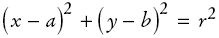
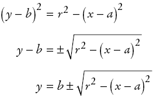

Comparing Visual and Numerical Information
- Compute intersection between circle and vertical line
- Circle has radius r = 100 and center (a, b)
= (100, 100)
- Line has constant x value
- Calculate intersection points using mathematics:
Equation of a circle with radius r and center point (a, b)
is

If you know x, then you can solve for y:
